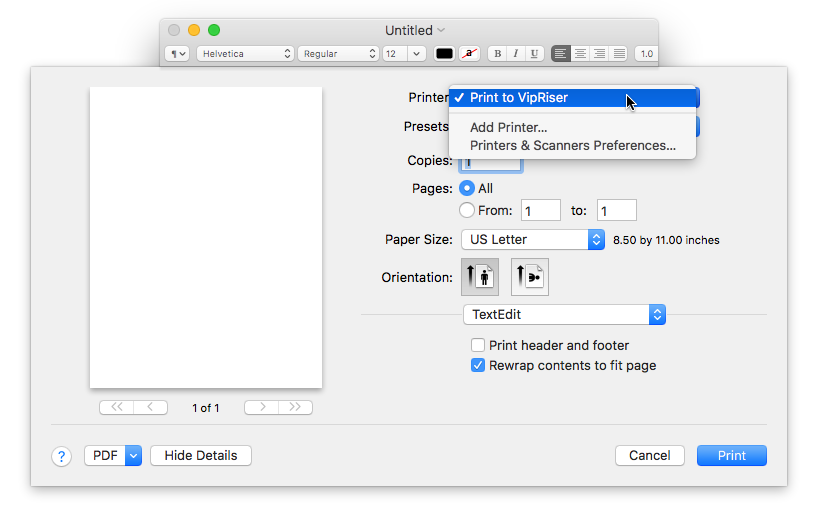
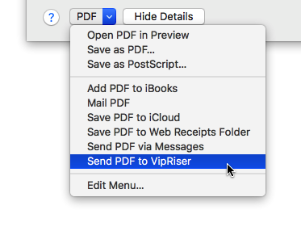

Use VipRiser as virtual PDF printer
Printing
VipRiser appears to your MacOS as regular printer. Once properly installed, it appears as a printer in app’s print dialog box.
NOTE: VipRiser app needs to be running. It should start by itself when you start printing. If it doesn’t, run VipRiser app manually.

Use Service Menu
MacOS standard print dialog box has special PDF Services menu in the left/bottom corner. This will let an app bypass the printing process and send PDF directly to VipRiser for further processing. Advantage of this method is that PDF retains its interactive features (e.g. live links in PDF document). Please be aware that the PDF Services menu is not available in all application.

If you do not see VipRiser in the services menu, you can add it manually by:
- select Edit Menu…
- add new service
- select VipRiser.app ,which should be located in your Applications folder